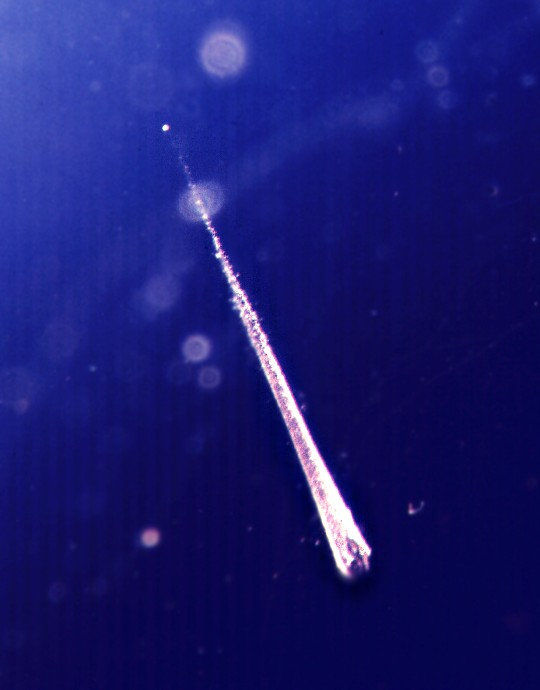

Shooting Stars
Shooting Stars or meteors are formed when a meteroid falls through the Earth's atmosphere. They burn up, forming shooting stars.

This is a paragraph.
Most people make a wish when they see a shooting star. They often appear during meteor showers. They are also called falling stars(sorry for not mentioning this.)
Hi,
lets look at the difference between a break
and a paragraph
ORIGINS OF SHOOTING STARS
Check out all about shooting stars
During collisions,bits of rock separate from a asteroid or comet. This gives birth to a meteroid. After some time,it enters a planet's atmosphere and burns up,forming a meteor.